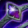
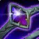

Gearing
We will talk about our stat priority and what pieces of gear you should prioritize obtaining. Gearing this season is very straightforward. When it comes to trinkets, especially, there are only a few good options.
Stat Priority
You want to prioritize your stats as the following: Critical Strike > Versatility = Mastery > Haste. Once you are fully geared, you want to try and obtain a total of 40% Critical Strike, 25% Versatility, 25% Mastery, and close to 0% Haste. Leech and Avoidance are very good tertiary stats for us, but we currently don't want to ever sacrifice item level for them.


Critical Strike
Critical Strike is strong for us both offensively and defensively, as it increases our Celestial Fortune healing. Critical Strike can also make our 2pc healing stronger, as it's based on the damage that you deal.
Tier Set
Our tier set this season is extremely strong, especially on AoE. Our 2pc causes our Breath of Fire to deal 40% additional damage as Shadowflame, while also causing us to heal for 50% of all the fire damage we do. Our 4pc causes all of our attacks to have a chance to deal an additional 15% Shadowflame damage. It also makes our Celestial Brew a lot stronger, causing it to absorb extra damage based on 100% of all Shadowflame damage that we have dealt since our last Celestial Brew.


Mystic Heron's Hatsuburi
Head
You always want to run tier set on your head, as it gives Critical Strike and Versatility, two very good stats for us.
Equipment
We will discuss what pieces of gear that you want to try and obtain for each slot, along with why. Keep in mind that item level is always the most important thing outside of necks, rings, and trinkets.
Neck
Ouroboreal Necklet
This neck provides us with a lot of Versatility and a little bit of Critical Strike, helping us reach our stat goals. It also has a nice equip effect that makes us gain fire and nature damage shields once every minute. While these shields aren't overly strong, it is a nice little bonus to have on top of this already great neck.
Shoulders

Strigine Epaulets
These shoulders are our best shoulders. They give a lot of Critical Strike and a good amount of Mastery, which when paired with the rest of our best in slot, gets us the best stats possible.
Back


Vibrant Wildercloth Shawl
This cloak is crafted and a very good option because of the ability to customize its stats.
Wrist
Life-Bound Bindings
These wrists are craftable and, ideally, will be what we put our Toxified Armor Patch on.
Waist

Bloody Dragonhide Belt
This belt is really good for us as it gives a lot of Critical Strike and a little bit of Versatility.
Feet

Slimy Expulsion Boots
These boots have good stats for us, helping us get our Versatility and Mastery up. Not only this, but they also have an embellishment attached to them that does good damage on single target, especially when paired with a Toxified Armor Patch. There is no other competitive option for boots becausae of how good these are for us.
Rings
 

Signet of Titanic Insight
This is our crafted ring. Just like the others we want to customize its stats to our liking. If you have a flavor pocket this can be a really good slot to put it on, too.
Weapons
Rashon, the Immortal Blaze
While this weapon's stats isn't particularly great for us, it gives us a little bit of Versatility which is better than nothing. What makes this weapon so strong, however, is the equip effect, which gives our abilities a chance to deal extra Shadowflame damage. This weapon is a very nice dps boost, especially on single target.
Defensive Trinkets

Fyrakk's Tainted Rageheart
This trinket is ridiculously strong. Although it doesn't give us primary stat, we still gain Versatility, a very good stat for us. On use, it gives us a massive absorb shield and radiates AoE damage, which is also strong on single target. While it is listed as a defensive trinket, it is also our top damaging trinket and can be used aggressively if you don't think you'll need the absorb shield any time soon.
Offensive Trinkets
Augury of the Primal Flame
This trinket is an extremely strong damage trinket. Whenever we deal damage, we have a chance to cause our Critical Strikes to deal 50% additional damage as fire damage for 20 seconds. When combined with Fyrakk's Tainted Rageheart, it is our strongest offensive trinket combo for dungeons. It also gives us a good amount of Critical Strike, our most important secondary.
Embellishments
Most embellishments are pretty bad for us this season, so we currently only have one competitive option.
Coated in Slime
This embellishment does good damage on single target, especially when paired with a Toxified Armor Patch. It can only be obtained by crafting Slimy Expulsion Boots, which, fortunately for us, has good secondary stats for us.
Enchantments & Consumables
Enchantments and consumables are very important for your character. We will discuss what enchants and consumables that you want, along with why. Certain enchants and consumables may vary based on your stats.
Enchantments

Incandescent Essence
Head
This enchant is very strong. It gives our abilities a chance to surround us with a shield of fire, which deals damage to enemies and shields us from a decent amount of damage.
Consumables


Hissing Rune
Weapon Rune(s)
Unlike the rest of our secondary stat choices, you always want to run Hissing Runes because Mastery has a lot more static power than a little bit more Critical Strike.
Gems
The gems that you socket into your gear depends on your own stats. Keep in mind that necks can now also be triple socketed via Tiered Medallian Setting and that you can only have one unique type of gem.
Unique Gems


Inscribed Illimited Diamond
The gem that you run depends on the statting that you require. If you don't need any more Versatility or Mastery, you want to run this gem for additional Critical Strike.
Regular Gems


Radiant Alexstraszite
If you prefer more Critical Strike with a little bit of Versatility, run this gem.